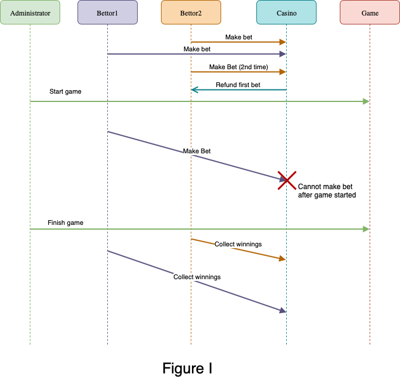

You will need to implement a Casino in in which Bettors will make bets.
Bets are conducted in tokens (sometimes called chips); you can assume that there is a separate mechanism by which Bettors can exchange money for tokens.
To make a bet, Betters put down some
tokens and make a prediction for the outcome of a Game). Afterward, tokens are given to the Bettors who bet correctly.
Note that the logic of the game itself doesn't matter; a generic Game is given in the starter code below.
However, keep in mind that a Game has certain states in which certain actions can take place.
After the game is finished, predictionMatchesOutcome() can tell you whether the game's outcome matches a given prediction.
This is a very small Casino; it concerns only one Game, and bets will
be taken for that game. This Casino does not need to support starting a new game after the first game is done.
An example sequence of events over the course of one Game
is given to you in the Figure I below (more explanation about making a Bet is given in the Requirements).
The Casino contains the current Game being played and keeps track of the bets made on that game. To see the details, refer to the code.
Implement the Casino contract according to the following requirements. You can make any changes you need to the starter code.
Requirements:
Bettor predicts the outcome correctly, the Bettor gets twice the Money they put down.
For example, if Bettor b puts down 5 tokens on the correct outcome, they should receive 10 tokens after the Game is played. Bettor predicted incorrectly, the Casino keeps their tokens.Game starts.Game is finished.Bettors must collect winnings themselves from the Casino after a Game by calling code, which you need to write. Until winnings are collected, the Casino keeps track of them. Bettor can have one active bet per game. If a Bettor bets more than once, their original bet
should be replaced by the new one and any previous bet should be refunded. Bettor MUST put down tokens at the same time that they're making a Bet.Bettors do not need to be registered; you can assume any Bettor can make a Bet.
You might start by writing an outline of the contract, including any additional fields, states, and transaction declarations. Then fill in the transactions to implement the program.